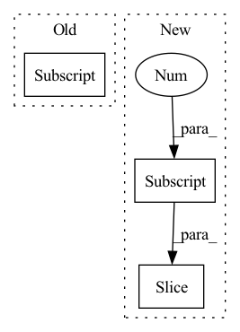

Pattern ID :1535

Before Change
// \end{align}
//
// for $i \in {1, 2, ..., \frac{d}{2}}$
rx = (x * idx_theta2.cos()[:, None, None, :]) + (neg_half_x * idx_theta2.sin()[:, None, None, :])
//
return rx
After Change
// \end{align}
//
// for $i \in {1, 2, ..., \frac{d}{2}}$
x_rope = (x_rope * self.cos_cached[:x.shape[0]]) + (neg_half_x * self.sin_cached[:x.shape[0]])
//
return torch.cat((x_rope, x_pass), dim=-1)
In pattern: SUPERPATTERN
Frequency: 3
Non-data size: 3
Instances
Fragment ID: 4427531
Project Name: lab-ml/nn
Commit Name: 0ce65adf9e602321109528b05cf99fccb16cd2de
Time: 2022-06-03
Author: vpjayasiri@gmail.com
File Name: labml_nn/transformers/rope/__init__.py
M Class Name: RotaryPositionalEmbeddings
N Class Name: RotaryPositionalEmbeddings
M Method Name: forward(2)
N Method Name: forward(2)
M Parent Class: nn.Module
N Parent Class: nn.Module
M File Name: labml_nn/transformers/rope/__init__.py
N File Name: labml_nn/transformers/rope/__init__.py
M Start Line: 132
M End Line: 163
N Start Line: 171
N End Line: 193
'>
Before Change
if len(token_index) == 1:
self_attn_mask = self.token_indices < token_index + 1
else:
self_attn_mask = self.token_indices[:len(token_index)][None, :] < (token_index + 1)[:, None]
self_attn_mask = self_attn_mask[None][[0] * decoder_state.shape[0]]
residual = decoder_state
decoder_state = self.pre_self_attn_layer_norm.forward(decoder_state)
decoder_state, attention_state = self.self_attn.forward(
After Change
if token_index.shape[1] == 1:
self_attn_mask = self.token_indices <= token_index
else:
self_attn_mask = self.token_indices[:token_index.shape[1]][None, None, :] <= token_index[:, :, None]
residual = decoder_state
decoder_state = self.pre_self_attn_layer_norm.forward(decoder_state)
decoder_state, attention_state = self.self_attn.forward(
'>
Fragment ID: 4427534
Project Name: kuprel/min-dalle
Commit Name: 30e15e3d0f77bdd24299ffdfe04554a40920c80f
Time: 2022-08-02
Author: nev@neverix.io
File Name: min_dalle/models/dalle_bart_decoder.py
M Class Name: DecoderLayer
N Class Name: DecoderLayer
M Method Name: forward(6)
N Method Name: forward(6)
M Parent Class: nn.Module
N Parent Class: nn.Module
M File Name: min_dalle/models/dalle_bart_decoder.py
N File Name: min_dalle/models/dalle_bart_decoder.py
M Start Line: 77
M End Line: 81
N Start Line: 77
N End Line: 80
'>
Before Change
o = norm2(o + ff(o), aug_batch)
glob = torch.cat([gnn.global_mean_pool(o[:-c.shape[0]], g.batch), o[-c.shape[0]:], c], 1)
o_final = torch.cat([o[:-c.shape[0]], c[g.batch]], 1)
return o_final, glob
After Change
agg = gen(o, aug_edge_index, aug_e)
l_h = linear(trans(torch.cat([o, agg], 1), aug_edge_index, aug_e))
cs = cscale(c[aug_batch])
scale, shift = cs[:, :l_h.shape[1]], cs[:, l_h.shape[1]:]
o = norm1(o + l_h * scale + shift, aug_batch)
o = norm2(o + ff(o), aug_batch)
'>
Fragment ID: 4427532
Project Name: recursionpharma/gflownet
Commit Name: 247152c649721ab45fd565bc1eed1059727ccdce
Time: 2023-01-19
Author: bengioe@gmail.com
File Name: src/gflownet/models/graph_transformer.py
M Class Name: GraphTransformer
N Class Name: GraphTransformer
M Method Name: forward(3)
N Method Name: forward(3)
M Parent Class: nn.Module
N Parent Class: nn.Module
M File Name: src/gflownet/models/graph_transformer.py
N File Name: src/gflownet/models/graph_transformer.py
M Start Line: 80
M End Line: 105
N Start Line: 83
N End Line: 111